A trip planner for people who love planning: start with what you know, compare the full trade-offs, and let AI help you make one decision at a time, instead of handing you a finished trip from one prompt.
Current Status: Build 3: deployed publicly, with a security audit
Live app: nextstop-x4bo.onrender.com (free hosting: the first visit after it's been idle can take ~30–60 seconds to wake up)
Demo: Screenshots below. Trip: from New York, hiking and lakes, $1,000, ~10 days, mid-April. 2-minute video comes in Build 5.
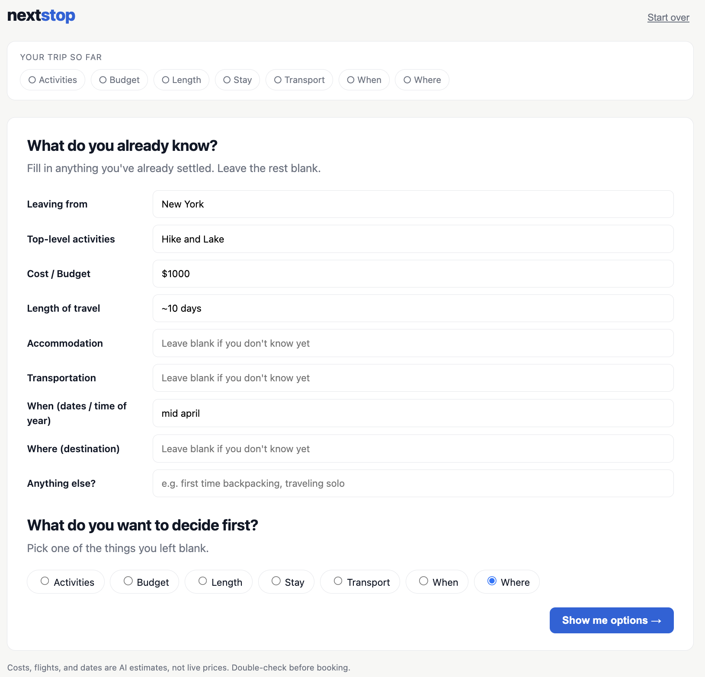
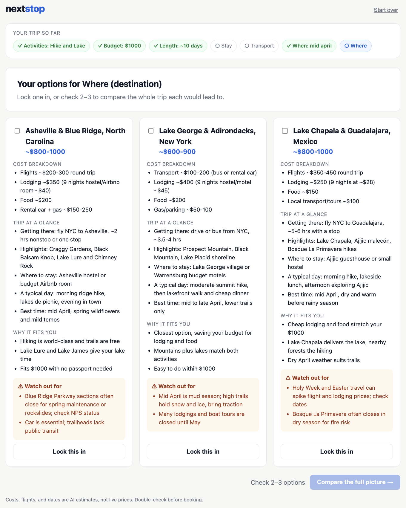
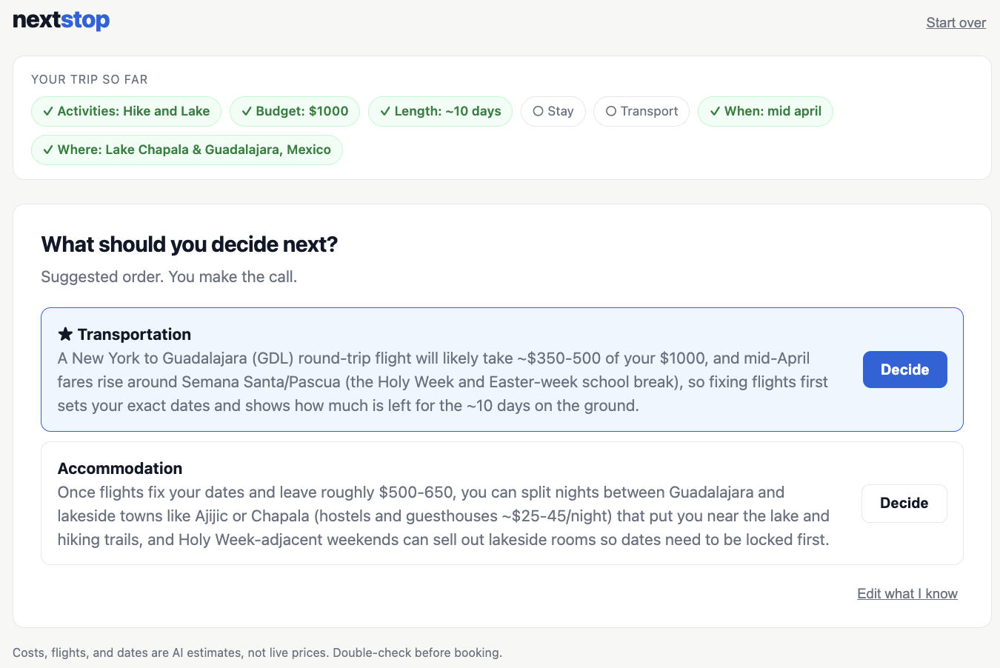
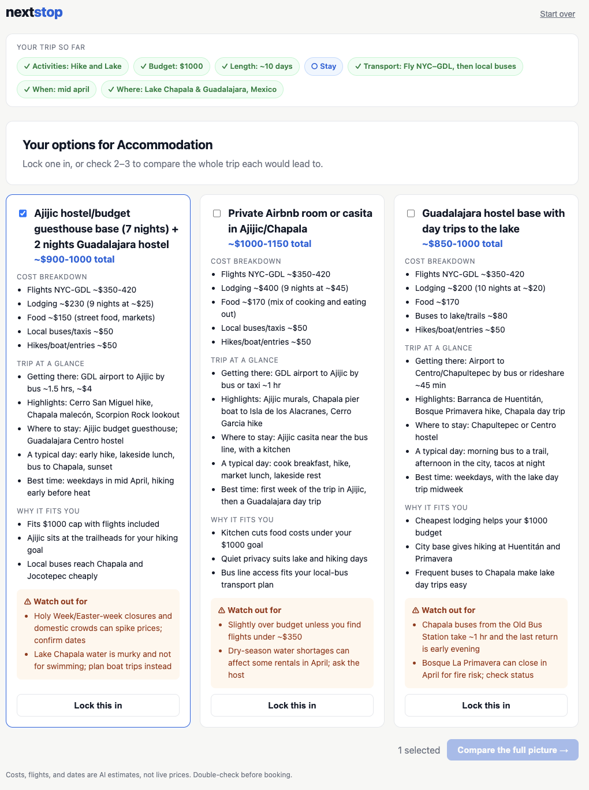
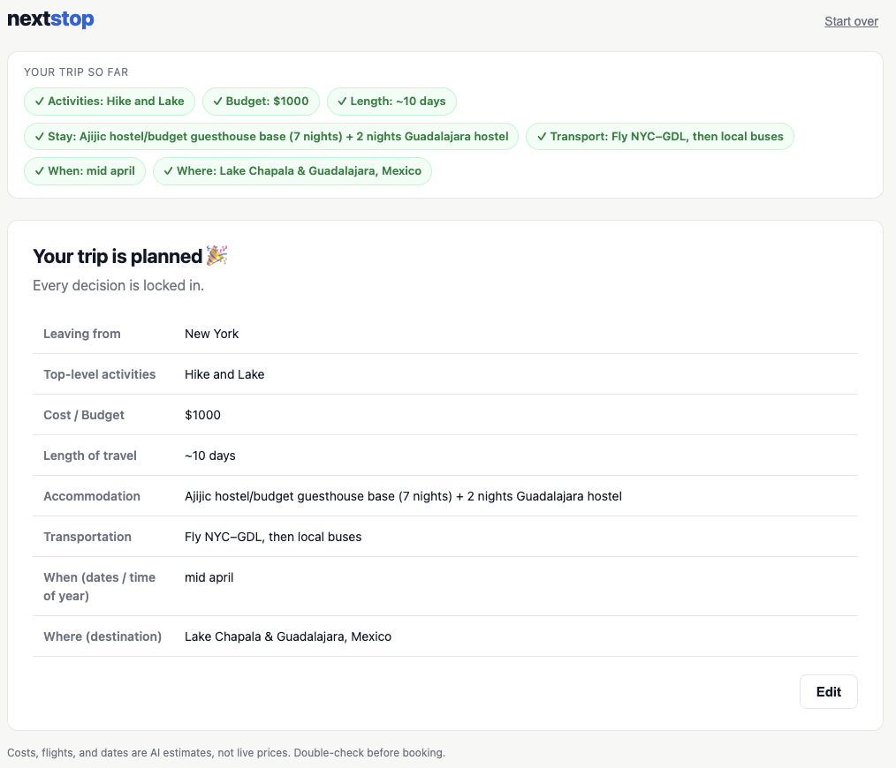
Before the AI suggests options, you can say what you want going into that decision. Here: Accommodation for a 10-day Guatemala hiking trip, "quiet area, kitchen, near hiking trailheads, under $60/night."
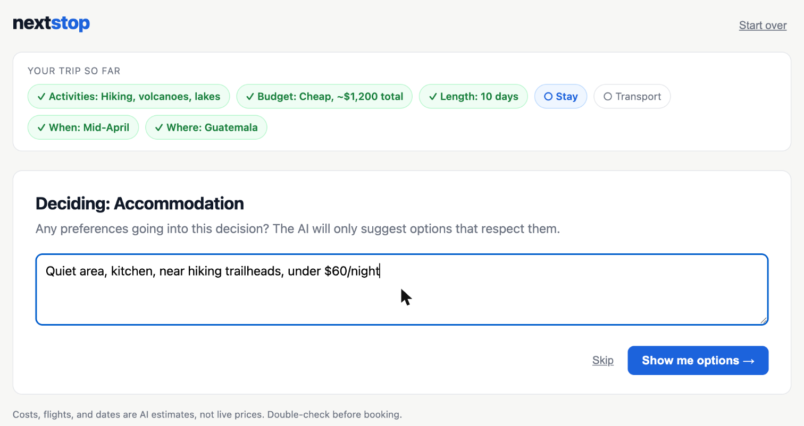
The preferences stay on the trip chip, and every option respects them. All three options have kitchens and quiet locations near trails, with lodging at ~$30–50/night, under the $60 cap. (These prices are still AI estimates. Checking them is Build 3.)
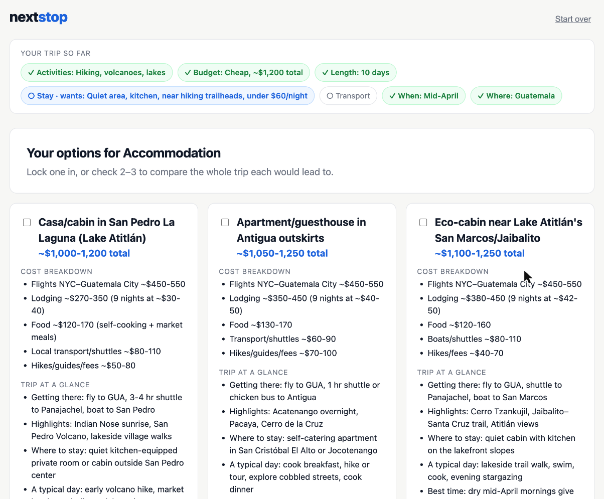
Who is this for? Me: I love planning trips, solo and with groups, and I'm usually the one doing the planning. I'm the first tester (replaying my real Guatemala trip), followed by friends I travel with.
The painful "Before" workflow: For my solo Guatemala trip, I started with what I knew: 10 free days between jobs, wanting moderate hiking and a first backpacking trip, and wanting it cheap. Then I compared Guatemala, Colombia, Costa Rica, and the Dolomites across dozens of tabs, and worked out dates by digging through airlines, airports, and connections. "Cheapest" isn't "best": I once flew London → NY through Lisbon to save $200, and it added about 5 hours I didn't see coming. One-prompt AI planners skip all of this and hand you an itinerary you didn't really decide.
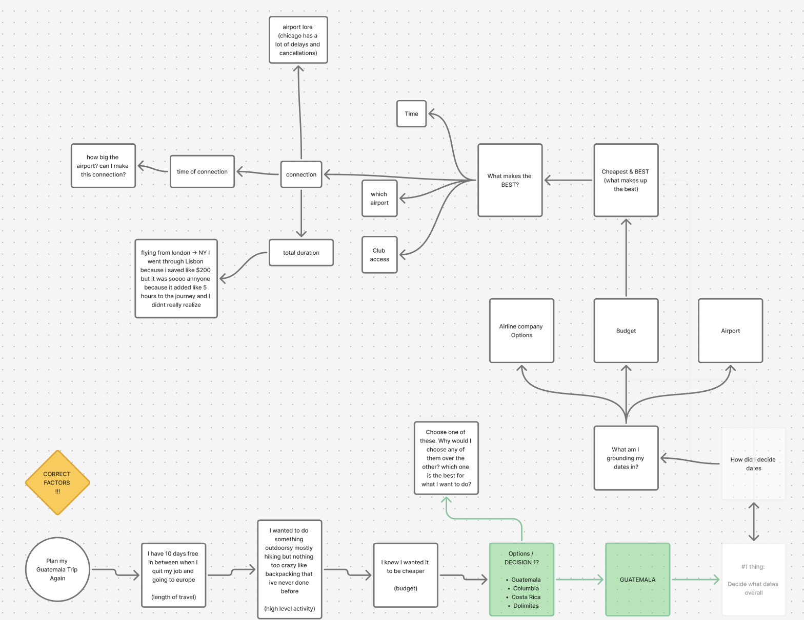
The "After" workflow with this product: A layered planner. I enter my knowns and choose what to decide first. The AI suggests 2–4 options, with why each fits me and the hidden trade-offs. Before committing, I can shortlist 2–3 options and see the full picture of each side by side (rough cost, flights, best dates, activities, lodging). I lock the decision, the AI suggests what to decide next (I make the final call), and I repeat until the trip is planned.
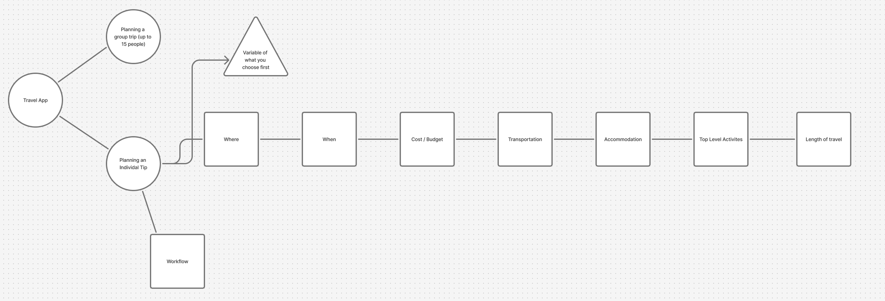
Riskiest Assumption: AI-estimated costs, flights, and travel times are accurate enough to trust when comparing options. Without real data they may be wrong, and the Build 3 "deal-checking agent" will test this.
How Build 2 tests it (PRD v2): Trust has two parts: does the AI follow what I told it, and are its numbers true? Build 2 tests the first part. Before each decision you can now give preferences (e.g. Accommodation: "quiet area, kitchen, under $60/night"), and the AI must respect them. In a real run for Guatemala in mid-April, all 3 options met every preference and explained how ("kitchens ~$35–55/night, under your $60 cap"). The second part, whether "$35–55/night" is actually true, is still unchecked, and that is Build 3's job with real data. PostHog session replay also shows where people hesitate or drop off, which tells me whether they trust the options enough to lock one in.
Why this needs AI (not just "faster"):
Positioning: Travel AI is crowded (Mindtrip, Layla, Wanderlog, ChatGPT). Nextstop's edge is the approach: layered, you decide, with trade-offs, the full picture, and "watch out for" warnings. It also has structure: it remembers your locked decisions, shows side-by-side comparisons, and guides your next step, so you aren't managing a long back-and-forth chat.
Agent vision (Build 3+): An agent searches real sources (flights, hotels, Airbnb, Vrbo) to replace AI estimates with real prices and connections.
What I learned testing it: I had an agent search Airbnb, Vrbo, and hotel sites and report back. It worked, but these sites' terms of service prohibit bots and scrapers, and automated searching can get accounts flagged. So Nextstop will use official data sources (partner programs and flight-data APIs) instead of scraping. It will never log in to, book from, or message from a user's travel accounts.
How it works (Build 2):
.env file.Currently all AI estimates; real flight and lodging data are next on the backlog (#4).
main, but only after the GitHub Actions checks pass. A bad deploy can be rolled back in one click from Render's deploy history.trips, keyed by a random UUID, and the private link (?trip=<uuid>) is the only way to open it. The browser never talks to Supabase. Flask reads and writes through the REST API with the server-only secret key, behind a per-visitor rate limit. Row Level Security is on with no policies, so the public key can read or change nothing (tested). There are two projects: dev for local work and PR previews, and prod for the live site only. Schema changes go through numbered migrations in supabase/migrations/, applied to dev first and to prod only after a backup (scripts/backup.py). Sign-in is still the next step (backlog #5).pip-audit) and a secret scan. Full results and an attack log are in SECURITY.md.I keep the backlog as GitHub Issues, so each item is tied to the commits that ship it: all backlog issues · Nextstop Roadmap board (visible to class members). The rule: get the core one-decision-at-a-time loop solid before adding bigger features.
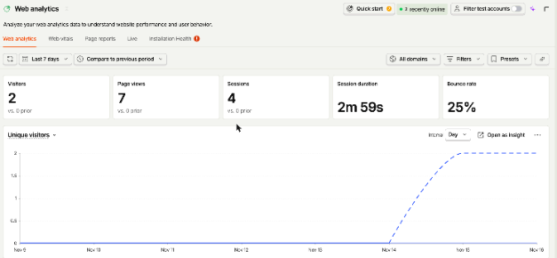
.env, and learned that a key's spending limit isn't the same as having credits (my first calls failed with "402 Payment Required"). Terminus Episodes 1 & 2 were a fun refresher. I've used the terminal a lot because of my background, so the game mostly reinforced commands I already knew..env and loads no analytics if the key is blank. (3) PRD v2: how Build 2 tests the riskiest assumption, a step-by-step architecture, and measured cost per run. (4) AGENTS.md: exact install/run/test commands, environment variables, project structure, and the data flow for one action.describe_trip() turns it into prompt text, OpenRouter calls Claude, and the JSON reply is cleaned (with one retry) and rendered. The API key never leaves the server. Learned that Flask's debug mode lets anyone who reaches the server run code, so it is now off unless FLASK_DEBUG=1. Also learned that a PostHog phc_ key is meant to be public, while an OpenRouter key is a secret.pip-audit and a secret scan on every PR. Render gives each PR a preview deploy, and deploys main automatically once checks pass. Rollback is one click in Render (steps in AGENTS.md). (3) Hardening: a per-visitor rate limit on all AI routes, a 20 KB request cap, clean 400 errors instead of crashes, no internal errors shown to visitors, and patched dependencies. 32 unit tests, none of which call the AI or a real database. (4) SECURITY.md with the full audit and a 5-attack log. (5) AGENTS.md: Shipping steps, an "Ask me first" list, and a rule from a real agent mistake (Build 1's hard-coded debug=True). (6) Saved trips: autosave to Supabase with a private link, separate dev/prod databases, migrations, a backup script, and previews that only touch dev. (7) Also merged before deploy: first-page answers are now "ideas" you lock later (#1), and the warm travel theme (#3).nextstop-x4bo.onrender.com, and typed text is masked, so their inputs aren't stored (screenshot below). Rollback test: in Render → Events, I rolled production back to the previous deploy, confirmed the site still loaded, then redeployed the latest commit. Rolling back turns off Render's auto-deploy, so it has to be switched back on afterward. That step is now in AGENTS.md.X-Forwarded-For header gets added to the left of the chain, so trusting a fixed number of hops from the right is safe.pip-audit found 7 known vulnerabilities, and the fixed versions need Python 3.10+, so I moved to Python 3.12. (3) nextstop.onrender.com is someone else's app; mine got nextstop-x4bo. (4) PRD v3: hosting, database and security choices (above). I first chose no database, then added Supabase so trips are remembered. (5) Database surprises: new Supabase tables needed an explicit grant … to service_role (migration 0002), and Render previews copy env vars only when they're created, so the PR #11 preview had no database keys until I closed and reopened the PR. Real price data moved to the next build (#4).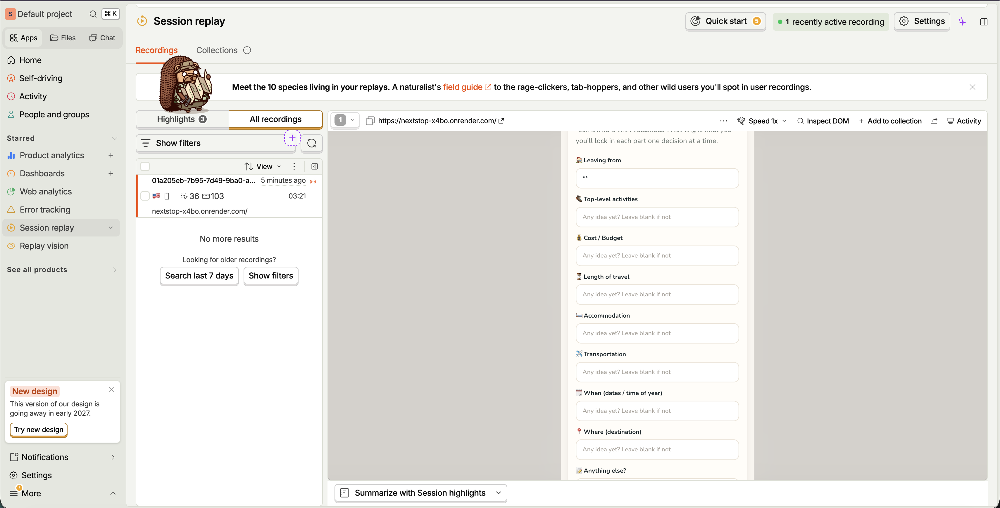